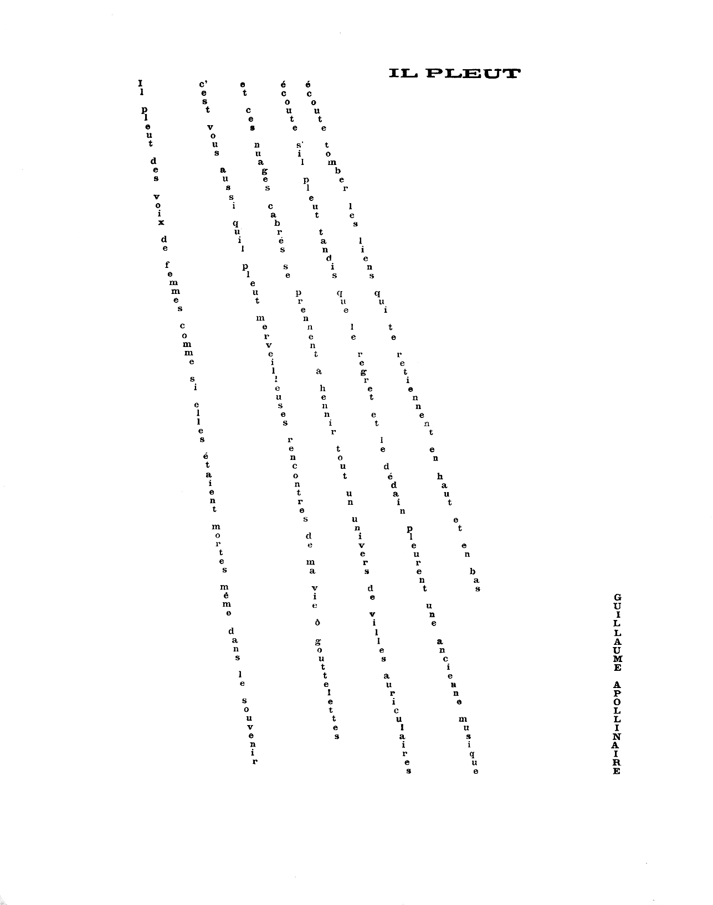
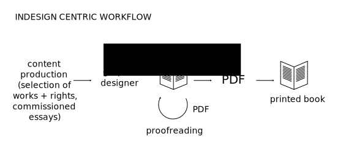
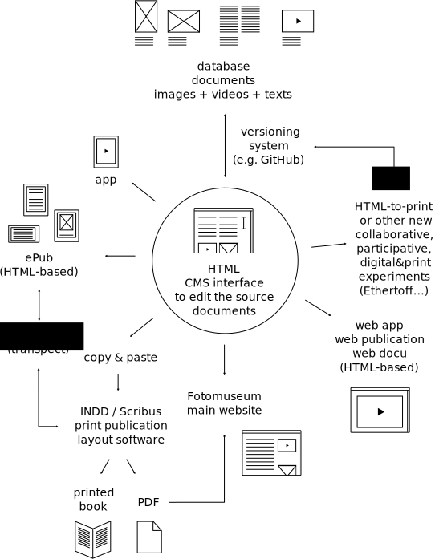
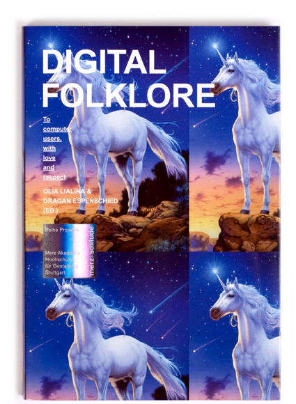
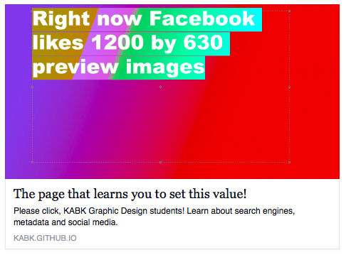

Texts by Eric Schrijver
‘Hybrid Publishing Workflows for Fotomuseum Winterthur’, by Loraine Furter and Eric Schrijver
Editing by Loraine Furter
Design by Loraine Furter and Eric Schrijver
Share — copy and redistribute the material in any medium or format
Adapt — remix, transform, and build upon the material
for any purpose, even commercially.
The licensor cannot revoke these freedoms as long as you follow the license terms.
Under the following terms:
Attribution — You must give appropriate credit, provide a link to the license, and indicate if changes were made. You may do so in any reasonable manner, but not in any way that suggests the licensor endorses you or your use.
ShareAlike — If you remix, transform, or build upon the material, you must distribute your contributions under the same license as the original.
No additional restrictions — You may not apply legal terms or technological measures that legally restrict others from doing anything the license permits.
You can read the exact terms of the license at the following url:
Have you had a glimpse of life after the template? The author would love to discuss with you! Your feedback on the texts and the subjects aborded in them are also very welcome. Get in touch through eric at ericschrijver dot nl
Made possible by
Introduction
Is there life after the the template?
Perhaps the most persistent impulse of twentieth-century art and design was to physically integrate form and content. The Dada and Futurist poets, for example, used typography to create texts whose content was inextricable from the concrete layout of specific letterforms on a page. In the twenty-first century, form and content are being pulled back apart. Style sheets, for example, compel designers to think globally and systematically instead of focusing on the fixed construction of a particular surface. This way of thinking allows content to be reformatted for different devices or users, and it also prepares for the afterlife of data as electronic storage media begin their own cycles of decay and obsolescence.
Ellen Lupton, Thinking with Type
Current database-driven web architectures separate content from form. Content Management Systems (CMS) allow multiple users to edit online publications. Such systems allow for efficient automatisation using templates. The written content is separated as much from the design as possible, residing in a database, prepared to be repurposed easily. The template is a ready made design that has designated placeholders, into which the content is poured. The template is stored as a file: changing this one file will cause the design to change on every page of the website.
What does this mean for the role of a graphic designer, whose intelligence traditionally resides in creating relations between form and content? Are there ways in which designers can adapt the design of individual articles and pages, and still retain the possibility of indexing and syndication that are so important with database-driven websites? Is there a life after the template?
This publication is a first step in answering these questions. Made possible by a grant from the Creative Industries Fund NL, it presents a number of case studies that can help imagine digital publishing tools and infra-structures that allow designers the leeway to make interesting relations between form and content.
The liaison between form and content

Il pleut, from: Calligrammes, Guillaume Apollinaire, 1918
To better understand how form and content are interrelated, one can look at authors that cross the boundaries between writing and design. For most written publications, there is a division of labour between the author and the designer. Within this division, the designer is understood to be responsible for form and the author for content. For a whole range of modernist poets, however, the design became an integral part of the content. “The Dada and Futurist poets, for example, used typography to create texts whose content was inextricable from the concrete layout of specific letterforms on a page.” Among the works exploring the relation in the most literal way are Apollinaire’s Calligrammes, where the lay-out resembles the subject (the rain, the water fountain, the Eiffel tower.)
Other authors testify of a more subtle link between form and content, as they let the writing process be influenced by the text’s look on the designed page. Where there is a traditional separation between the author’s manuscript and the designed document, these authors get involved in the process of type setting. In his essay ‘On Modern Typography’ Irish playwright Bernard Shaw admits: “When a proof has been sent me with two or three lines so widely spaced as to make a grey band across the page, I have often rewritten the passage so as to fill up the lines better (…)”. In the same text he also attributes this practice to William Morris, who was even more involved in the typographic production of his later works, typesetting them himself for his Kelmscott press. Desktop Publishing technology has made such an involvement in the industrial process even easier, as the same computer an author uses to write can now also be used to type-set a text. The author Dave Eggers, who is also a designer, editor and publisher, is known to write his books in the lay-out software Quark Xpress directly.
Authors taking up the role of designer make a good case for the interrelation of form and content. Yet also in a process that follows a more traditional division of labour, it is tricky to separate the two. We never read the Word processing file an author sends to their editor. Rather, we encounter its edited and designed form, and we read it in the context of a publication. Editors routinely modify text to correspond to a publications format and to fit space restrictions. Designers then add a layer of intelligence to the publication. Making line-breaks, choosing typefaces, creating hierarchy through typography—all the usual labour of the designer—determines how the text will be read.
The moment we can understand the relation between form and content is when they get separated. In English newspapers, a factual heading is often followed by a more whimsical subheading. When digitising and making accessible these newspapers, the scanning process might not pick up on the difference between the two levels of headings. When both headings have the same importance in the new digital interface, this will make for an awkward reading experience.
The design associated with a text also guides the expectations of the reader. When the American association for graphic designers, AIGA, created their series of design theory readers, ‘Looking closer’, they took their cues from scientific publishing when it came to the design. All articles have the same sober typography. The unified design makes the reader forget the writings come from a variety of publications: fashion magazines like I.D. magazine and 032c, trade magazines like PRINT, but also magazines in which graphic design criticism has a more central place, like Emigre. The end result is that texts that were written to communicate to a mainstream magazine audience feel summary and superficial in the scientific lay-out. If some visual cues from the original publication contexts would have survived, it would be easier to appreciate these texts for what they are.
With time it falls apart: design online
When publishing an article in an online publication, the means to link form and content are similar to those of paper publications. Even if the tools are different, designers still use typography to structure content, and the overall design of the site will construct a context that informs the reading experience. The big difference is that, in most cases, the design will morph and adapt over time, cutting its link with the text.
I got aware this dynamic through a remark of JODI’s Dirk Paesmans. In the early days of the World Wide Web, the website of Wired was done according to the latest trends in web design, much like the paper magazine Wired had a design that evolved from issue to issue. But it would not just be the latest articles that would show the new design. Everything would change. Paesmans told me there was a re-design he liked particularly—but as the inevitable next redesign arrived, there was no way to hold on to it.
Paper magazines have the luxury of being able to evolve from issue to issue, while the older issues will keep their design, forever encoding a specific cultural moment, as testified by the text, the design, even the advertisements. A website drags its mutating past along, continuously redesigning it all.
That the form of a web page is less fixed than that of a printed page might seem obvious. Up to a certain degree web pages are inherently flexible: HTML, a markup language, was designed to give considerable freedom to the interpreting device when it comes to the visual representation. Yet some parts of the way we deal with design online aren’t as much inherent in HTML, they have more to do with the web architectures chosen. These architectures often have an underlying belief in the separation between form and content.
The tendency to separate form and content has its roots in the web’s foundation as a medium for scientists. Science, and by extension scientific publishing, is based on standardising form. Scientific magazines will provide strict templates to follow for authors. Initially, though, the early web technologies did not enforce much separation between form and content. Authors could freely add formatting instructions everywhere in the text.
The first technological development that made a separation feasible is the introduction of CSS (Cascading Style Sheets). CSS allows to store style information apart from the content. For any of the pre-defined tags that HTML offers (heading, paragraph, list item) the style sheet describes how it should be displayed. One style sheet can be used for an entire website, and changing the style sheet once can change the look of all pages. A rag tag coalition of browser vendors, standards bodies and web designer/developers have managed to make adoption of CSS nearly ubiquitous.
A second technological development that has helped to separate form from content online is the advent of Content Management Systems. At first only available to large organisations, powerful systems like WordPress and Joomla have become available for everybody. In these systems, a general design is encoded into a template, and the contents for individual pages are stored in a database that is easily editable by the user. The user does not need to touch the code of the template. For clients this saves time and money. The downside is that a CMS requires shoehorning every page into templates: early HTML pages offered much more freedom in this respect, as potentially every page could be modified and changed to the designer’s whims.
As long as websites keep using centralised CSS files and templates that get modified for each redesign, the links between form and content will keep getting cut online. The goal of this publication is to start imagining alternatives for these web architectures.
Life after the template
In this publication we will find two case studies of workflows that make more intimate links between form and content. The study for the Fotomuseum Winterthur is a proposition. Developed in collaboration with Loraine Furter and the Hybrid Publishing Consortium, it imagines digital publishing strategies that connect with the print production process, and share the encoding of design between print and screen. The second case study, a description of the workflow for creating digital theses at the KABK, has been actually put into practice. Inspired by the process by which amateurs made homepages in the 1990ies, it has allowed graphic design students to create digital publications without the constraint of a template. The digital tool Ethertoff is introduced, which is one of the first collaborative editing system to also allow the collaborative editing of the style of a publication. An interview with Jort de Vries, designer from the Dutch start-up Blendle, introduces the way in which Blendle translates the typographic diversity of print to the screen. Finally, as an appendix, the article ‘Tonight we’re going to publish like it’s 1999’ is a shorter text that reiterates many of the themes in the publication in an accessible format.
Of course, I would welcome your comments.
Hybrid Publishing Workflows for Fotomuseum Winterthur
Fotomuseum Winterthur has asked The Hybrid Publishing Consortium to investigate how their publishing tradition can be re-imagined in the context of digital publishing. As a point of departure and case study, we will focus on one particular publication and exhibition—Manifeste! Eine andere Geschichte der Fotografie (Fotomuseum Winterthur, 13.09-23.11.2014), and propose transitional workflows for new and hybrid publishing strategies.
The Museum Catalogue in Post-digital Times
Within the world of art publishing, the catalogues produced by Fotomuseum Winterthur have acquired a solid reputation. Created to high standards of print design and reproduction quality, the catalogues are prime examples of the monograph. Working with designers such as Moiré, NOORD, Trix Wetter and publishers like Steidl, Nieves, Spector Books, and commissioning new texts for each catalogue, these books make sure that exhibitions staged at Winterthur reach a larger audience than its rather remote geographical location would otherwise suggest.
The firm commitment to the printed object also comes with a down-side. The excellent, yet medium specific objects, are not easily translated into digital formats. The printed book is a medium in which form and content are contained together in one convenient support, and the books published by Fotomuseum Winterthur fully exploit the possibilities of this intimate liaison.
Yet the public that buys Winterthur’s catalogues is but a small part of the potential public for the art that is shown and the knowledge that is produced by the museum. And the book is but one of the formats to reach an audience today. With the public discourse around art taking place in large parts online, there are a myriad of web channels not yet exploited by the Fotomuseum. The museum therefore wants to reposition their catalogues, as complementary objects in a whole new hybrid publishing strategy, composed of paper and digital publications.
Hybrid publishing: paper and digital formats
Books from the post-Gutenberg era and digital publishing can easily be opposed. In this logic, the codex is demarcated and linear, whereas digital publishing is fragmented, interlinked and embraces the logic of the databases: elements have formal relations but no inherent narrative order. Upon closer scrutiny, the opposition does not really hold: many elements of the codex return in digital publishing models.
Image: Medamo and Kimmy Spreeuwenberg, p. 31. CC NC BY
The y-axis shows types of navigation ranging from standard (meaning, in this case, linear) to customised. The x-axis shows layout from plain to rich. ‘Rich’ can easily be misunderstood to mean ‘better’. That would, in our view, not be correct. The rich formats allow a juxtaposition of multiple media. But at least equally importantly, they allow consistency, at the expense of flexibility. A format like PDF is a page description language: the position of every element is described very carefully. Most other digital publishing formats are based on mark-up languages like HTML: these provide a description of the content that leave a lot more interpretation to the device that finally is going to display it. It is not an accident that the option with the richest layout in this model then also has a very lineair navigation.
Exploding the Codex
If one wants to spread the knowledge contained in the exhibition and traditionally gathered in paper catalogues, we have to rethink the codex/monograph monopoly. This does not mean we want to do away with it, but rather that we want to come up with complementary objects and strategies, including digital ones.
The linearity and graphically rich nature of the catalogue is hard to translate in most digital formats, already just thinking in terms of file sizes. What we would like to do is to explode the (traditional conception of the) catalogue, look at the various components that make up the book and re-combine them in a hybrid—paper and digital—ecosystem.
Medium-specific contents
As publications go, the museum catalogue is essentially a collection. It brings together reproductions of artworks, descriptions of artwork (metadata) and texts that treat the questions raised by the exhibition. The editor and designer make sure all these elements work well together, and the book is the site of this synthesis. Yet the different pieces of content brought together in the catalogue might be able to function on their own as well. It would be possible to reach various audiences and establish different relations through re-publishing different types of content in the most fitting channel.
We can then pose the question: what contents make up the universe of the exhibition but did finally not make it into a printed edition, due to an economy of space for example, or falling outside the editorial theme. Which texts could have been written, which images could have been produced, but did not fit into the model of the book?
These questions are too late to ask in the context of an already finished publication but can and should be taken into account for newer projects. To have, for example, the exhibition’s curator publish a blog documenting the development of the exhibition and the catalogue, is a way to create “web-only” content that enriches and is complementary to both the catalogue and the exhibition. If we look at an exhibition as a constellation of people and artworks coming together, creating a certain knowledge, this is another way yet of capturing and disseminating this knowledge.
Thus, we propose for Winterthur to rethink the (traditional) way in which they have produced the publications that accompany the exhibitions. The editorial team is responsible for identifying and creating a collection of objects (texts, images etc.) that can represent the exhibition. The editorial process first focuses on elaborating the selection and the relations between the objects, and only as a subsequent step identifying the media that can be used to make them public.The editorial team works in close connection with the social media & digital strategists to choose what content would work best for which medium.
The Manifeste! case
Manifeste! is an exhibition that explores the historical relationships between photography and the manifesto, in a large sense of the term, bringing together statements from across the history of photography. The Manifeste! exhibition provides a new perspective on photography and formulates an alternative history of the medium.
The manifesto is a specific kind of document, which often has a double status: both visual and textual. Because of this, the Manifeste! exhibition is an unusual one, exhibiting a huge amount of text. To highlight this text-visual duality of the manifesto document, the manifestos are literally blown up in the museum space, forming a big visual and textual composition. This leads to an inversion of the usual exhibition codes of photography museums, which usually display images on the wall and captions underneath. In the Manifeste! exhibition, the reproduction of the manifestos statements (mainly texts) are exhibited on the walls and the pictures accompanying them were displayed in vitrines
In addition to the fact that these documents are both texts and images, the majority of the manifestos shown in the exhibition are printed documents, and most of them were originally published in books and magazines. The exhibition catalogue is thus a natural format for them, and next to documenting the exhibition, it also constitutes an act of re-publication. The book starts with a visual entrée en matière: a selection of full-page images of some of the covers of the manifesto’s publications. After the usual introductory texts and essays comes the main part of the book: high-quality facsimile pages of the manifestos, reproduced in their real size, with excerpts (indicated on the documents with an arrow) subsequently translated in German. Then comes a section reviewing all the publications where the manifestos were originally published, with cover, references and description. After about 400 pages, the book ends with a series of back-covers, mirroring the first part of the book. The inner fold of the back-cover of the catalogue contains an index of the manifestos and table of contents. A separate (smaller) “reader” contains some translations in English.
Like the exhibition, the Manifeste! catalogue is a rather unusual publication for the Fotomuseum, and a particularly big challenge when it comes to digital publishing formats. The decision to treat texts both as text and as image is difficult for some kind of e-ink readers that are not good at displaying high resolution images, and even on bigger tablets the huge size of the files required would potentially be a problem.
This book thus makes a very good case study for hybrid publishing workflows, and it shows that is hard to imagine an automatic translation from one format to another. The translation process must be carefully thought out, as every editorial process, and it requires consideration of the specificity of each medium.
Exploding Manifeste!
As part of the study of the composing elements of the printed publication, we have studied the digital InDesign file from which the book was created. This file encodes all images and texts, as well as the layout of the book. For the this part of the case study, the Hybrid Publishing Consortium collaborates with Gerrit Imsieke from the Leipzig based company le-tex. With a software called Transpect (see details in the chapter le-tex and Transpect), we try to extract a structured HTML file out of the InDesign file, where the book is contained. This allows us to experiment with the inDesign file as a base format for many outputs (from ePub to web sites). This process will also be very useful for the treatment of previous publications, which all correspond to this configuration: the last version of the contents is in the InDesign document. That is, if the museum has access to the file.
The study and experiments conducted on the Manifeste! catalogue lead us to imagine a transition plan towards a more general hybrid publishing strategy for the Fotomuseum.
Hybrid Publishing Workflows
The changes brought on by new publication formats and possibilities do not only concern the final objects, the publications, but the whole publishing process, its actors and how they work together. Publishers are rethinking their traditional publishing workflows and elaborating new hybrid publishing strategies.
Current workflow
The way in which the Winterthur catalogues like Manifeste! have been produced is similar to how many smaller art publishers work. The visual design is very important: the relation between form and content is tight. In the case of museum Winterthur, there is no fixed house style—they work with multiple designers.
The museum, in this sense, works without templates. In theory, this approach still allows to work together with an external Content Management System. Programs like inDesign permit to hook into external CMS’es Systems, through the generic exchange technology of XML. This is what larger publishers do: they build custom workflows to enable the sharing of elements between various formats of publications. But because art publishers require both more customisation and have smaller IT budgets, such solutions are hardly ever put in place.

The practical consequence then of this workflow, is that all of the knowledge that is produced during the production of the catalogue becomes encoded into one file, the inDesign file. Not only the visual design is stored in this file, also the canonical versions of the texts: since the proofs are created from inDesign, any corrections are often encoded with this program as well.
Because the inDesign is the digital representation of the knowledge represented by the catalogue (and thus the exhibition!), the Consortium wanted to find out how much of this knowledge could be extracted from the file, in order to be able to re-use it in other, digital, publishing contexts.
Le-tex and Transpect
The Hybrid Publishing Consortium has built up a working relation with the Leipzig based company le-tex. Le-tex specialises in what they call ‘Content Engineering’. Basically, they come up with workflows for publishers for all parts of the process leading up to the publication. This means importing text formats into Content Management Systems, formally verifying them and allowing for proof-reading, version management and conversion strategies between the various digital and analog formats in use.
What is exciting about le-tex, besides their extensive experience, is the fact that they have Open Sourced a large part of their digital solutions. Transpect is an ‘open source framework for converting and checking documents’. Our close working relationship and the fact that their tools are Open Source makes us confident in suggesting le-tex’s tools as part of a hybrid publishing workflow.
What is special about Transpect specifically is the way in which it handles lay-out and styling information. Content Management Systems have a tendency to focus on the encoding and exchange of text, leaving styling to ephemeral templates. Transpect takes it upon itself to also translate the various forms in which layout and style can be encoded. Most importantly, it provides facilities for converting inDesign paragraph styles to CSS styles and vice versa.
From InDesign to HTML
The usual workflow with Transpect is to set up a ‘conversion pipeline’ from one format to another. This pipeline is then configured and tweaked to best accomodate the specificities of the input. For our experiment with the Manifeste catalogue, we first opted to convert the inDesign file to HTML. We chose HTML because it is the lingua franca of digital publishing: it is used both on websites and eBooks, and increasingly in mobile applications. It is easy to store and repurpose.
The conversion performed upon the Manifeste file managed to extract the texts and do a good job of converting the text styles to the CSS format as used by HTML. However, while we experimented with converting the inDesign file of the Manifeste catalogue, we found ourselves adapting the pipeline to the specificities of the publication to make the conversion function ever better. Le-tex’s Gerrit Imsieke also came up with a number of changes we could make to the inDesign file itself. The conversion process thus becomes time-consuming. The challenges faced by smaller arts publishers become apparent again. Larger publishers might re-use an inDesign layout for an entire series of books, which makes optimising the conversion an easier investment.
Gerrit provided a series of guidelines for designers working in inDesign, that make their files easier to process (we added these as an annex). We suggest that Winterthur asks the designers for upcoming catalogues to follow them. The extracted content then is ready to use by a digital designer—whether it is to make an ePub, a web publication or a mobile application.
The recommendations will make the process of extracting content easier—but it is probable that every single publication will still require a certain amount of customisation.
The following schema proposes a workflow for the publication currently in development, and for earlier publications in which the paper publication is still the main source (last version stored in the INDD file after last proofreading).
Creating a hybrid publishing strategy
If useful for existing publications, a workflow based on deconstructing the inDesign file does not seem ideal for developing a future hybrid publishing strategy.
We have touched upon some of the technical limitations of this approach: the deconstruction can not be fully automated. More importantly, following this approach would make each publication dependent on the book publication, which has to be finished first.
A more logical approach would then be to explode the book beforehand: the different elements to be published by the Fotomuseum (images, legends, texts, videos) are selected and created (or digitised), and the relations between these elements are described. The paper publication builds upon this curated set of elements, but so can other types of (digital) publications (more on this in section 4).
A challenge for the museum is how to coordinate the relation between various publication formats. At the moment the paper design and the digital design seem to be quite separated. The museums publication director could instigate relations between these designers, or choose to hire one hybrid designer that tackles both media, or work with an art director that oversees the relations between the various publication media. Such an approach seems necessary to reach a more global hybrid publishing strategy, that will give a greater coherence between all the formats, and more complementarity.
Future workflow
So how does this exploded workflow work in practice? Our proposition is as follows.

HTML as a basis
Providing the scaffolding for the new digital strategy of the Fotomuseum, this new workflow puts the HTML format and the web database at the center of the publishing strategy. The HTML content becomes the source for all the materials, that are stored in a database with a versioning system. Assets can be modified online through an editing interface (CMS), and then used in the different outputs.
As a side-note, the fact that the HTML is going to be used in a publishing workflow does place extra demands on the CMS, that do not exist for a strictly web-facing CMS. The most important exchange technology in the publishing industry is XML. Tools like inDesign know how to use XML. It is therefore important that the CMS stores its HTML in the specific form of HTML that is compatible with XML: XHTML5. inDesign is famously picky when it comes to importing XML, so additionally the CMS implementation should be tested with inDesign’s import feature.
inDesign as an output
From our inDesign experiment we have concluded that an inDesign file is not an appropriate source. inDesign however remains a valuable tool for print output, allowing a level of control unmatched by any automated solution. We propose to still use inDesign, but simply at a later stage in the process. Not as a source, but a target.
Many large editors rely on inDesign’s XML handling to synchronise with their CMS’es. In most cases, it is the text that is being synchronised and the design that is constructed from scratch for each medium. We propose to go a step further, and also share style information. What is a very promising solution created by le-tex, is a conversion pipeline from CSS styling (HTML’s design language) to inDesign paragraph styles. This would mean one designer would work on the basis of the design that can be shared between screen and print. The print designer can then adapt and modify the styling to fit the medium she or he works in.
Revision control
Having a centralised database answers the very practical question: how to integrate the corrections in the design easily and safely? Where is the last version stored, and is it easily re-usable? Particularly in the context of hybrid (and efficient) publishing, a single source is essential. One source to rely on, and on which all the outputs can be based.
This database needs to have a well integrated revision control. Versioning systems were developed in the context of software development, to keep trace of the modifications on a code file. These systems improve collaborative workflows, and make it easier to follow the changes in a file.
Making use of versioning in a print-layout/graphic design context, the graphic designer could import all the data again, in the layout file with the risk of loosing layout detail’s adjustments, or choose to add only the modifications, which are very easily identified with a versioning system…
Modules and combinations
For the text to make any sense at all post-scramble, it had to be ‘prepared,’ like pieces of lego, each already designed to fit together with other pieces in multiple ways, says Umberto Eco on Tristano, a combinatory algorithmically generated novel written/programmed by Nanni Balestrini in 1966, of which Verso re-published 10,000 different versions (out of the 109,027,350,432,000 possible variations) in 2014.
Thinking the publication as a collection of contents interrelated allows more flexibility and modularity. It also enables potential future re-use of the information in another context. For example, a contributor could look for a picture in the Fotomuseum database and see in which previous publications it appeared, and maybe read a contextualised extract in which the picture is mentioned. This would also be an interesting feature for the public and educational purposes: being able to visualize a network around each work and understand its connections.
Open licenses
The future of publications will be hybrid and multi-formats. Which does not make things easy in terms of licensing. Museums will have to negotiate more extensive and open-ended permissions with rights holders.
An alternative to such extensive custom license agreements would be to ask contributors to license their work under an open license.
For instance, the Creative Commons license “Attribution” or “CC BY” allows the re-use of the work for any purpose and through any media, as long as the new use credits the author.
This enables an open-ended usage of the work by the museum. In addition, this enables new publishing strategies, and new possibilities of involvement for the public.
Our research shows that a new phase of digital strategy is taking hold in cultural organisations. Whereas the last five years saw them focus predominantly on social media marketing and engagement, we have identified a more recent shift to exploring mature digital channels. Examples of these are–online learning platforms, digital books, open licence content repositories and collaborative research platforms. They demonstrate that the Web has become the platform of choice for critical discourse. The shift we see expresses a horizontal tendency, where participants (audiences) are engaged as co-producers and invited to share and reuse content. (Hybrid Publishing Consortium)
Encouraging the contributors to publish their texts, pictures and videos with an open license will facilitate their re-use by the Fotomuseum in multi-format publishing and allow for more flexibility, for example with new formats that we don’t even know yet.
The use of such licenses also provides new possibilities for the public to access and get involved with the productions of the Fotomuseum. It enables a more widespread sharing of the knowledge produced and facilitates re-use for educational purposes.
Towards a publishing program
The aim of this workflow is to expand the possibilities of publication formats, and include them in a general strategy, to not have to re-invent the wheel at every publication. But all the formats will not be necessary every time and that is where the work of the editor(s) is very important: choosing among the possibilities the ones that will make sense in relation to the content, and who can function well together in a specific case.
Specific publishing formats can then be imagined for the different programs and activities of the Fotomuseum. The museum could develop a collection of small and very simple ePubs for individual essays by critics (drawn from and at the same time advertising for the full catalogues), or transcripts of public events and lectures.
The PLAT(T)FORM presenting works from young photographers could have an ePub3 digital series of publication for each new artist, with the same design, to help promote their work. Like publisher JRP|Ringier with its “First monograph” collection, all based on the same canvas.
Some specific exhibitions could be the occasion to develop a special web page/site where the visitor can further explore the works, and access materials not shown in the exhibition, in another temporality.
As N.Katherine Hayles says, in her text Electronic Literature: What is it? (2007), readers come to digital work with expectations formed by print, including extensive and deep tacit knowledge of letter forms, print conventions, and print literary modes. Of necessity, [we] must build on these expectations even as it modifies and transforms them.
That is what we propose with this workflow: it still enables the production process of museum monographs, but by requiring the monographs decomposition it creates new possibilities at the same time.
If all the contemporary formats of publication are very different, they are not incompatible. They are rather complementary, and a good hybrid publishing strategy can be efficient public-wise, both in terms of quantity (bigger public, more varied) and quality (providing several formats responding to different needs of one member of the public).
Theses at the Royal Academy of Arts, The Hague
The Royal Academy of Arts in The Hague, The Netherlands runs a well-known Graphic Design Bachelor program. In recent years head teachers Roosje Klap and Niels Schrader have reinvigorated the program with a focus on social responsibility and the appropriation of digital technologies. Each year in the four-year program features as a subject both Coding and Interaction Design.
The Bachelor thesis has been an important part of the curriculum for many years. It allows the student to research into a specific area of interest and will provide a theoretical foundation for their final exam project. The theses have traditionally had a final output form of a printed publication: these are archived in the school libraries. With the curriculum placing more importance on
digital design, the nature of the thesis is open to be re-imagined.
Life after the template
The form of the thesis in art education is distinct from the papers written at Universities, especially seen in relation to the role of the template. The challenge has been to come up with a workflow for creating digital theses that gives the students the needed flexibility to express their ideas both in writing and design.
Requirements
Starting in the academic year 2014/2015 we ask students to create their thesis for the screen. More specifically, we presented the students not with a screen-only model, but a screen-centric model. The students are free to create a print version of their thesis, but are encouraged to take the version conceived for the screen as the departure point.
Scientific publications often choose a pre-formatted form. Magazines will provide templates to follow for authors, that in most cases use Microsoft Word or the LaTex authoring system. The first texts to be shared online were academic papers, and the separation of form and content that is habitual in academic publishing has permeated every aspect of the online publishing eco-system. In contrast, the students in The Hague are are expected to engage in the design of their thesis. Form and content are decidedly mixed. Clearly, the last thing we want to do is give the students a template.
There are additional requirements. With a group of 50 students, we need to be able to follow the process of all students, be able to give feedback. Also, we are legally required to archive all theses. Finally, we want to publish the theses online in an accessible and durable way.
The paradox of choice
Even if the technologies of the web are in theory standardised and accessible, the rapid succession of technological fashions, breathlessly chronicled in blogs, makes it hard to get started.
The landscape of web technology is varied and ever changing. Creating an advanced web project might include choosing a server side programming language (Python, PHP, Node.js) that talks to a database of choice, then creating the visual and interaction design on top of a foundation of front-end ‘frameworks’ and ‘pre-processors’.
The amount of choices to make is staggering, and the complexities of such systems high. For the project at the KABK we have foregone these technologies, for a more simple, back to basic approach: writing HTML pages.
Writing websites like it’s 1999
The first web-sites were exactly this: ‘hand-crafted HTML’. Many small sites were created as a series of HTML pages, with occasional updates (the person designing the site might then charge for each update!). Coding was not always necessary: tools like Adobe Dreamweaver provided both a visual view and a code view.
The democratisation of Content Management Systems like WordPress and Joomla have changed the equation. In these systems, a general design is encoded into a template, and the contents for individual pages are stored in a database that is easily editable by the user. For clients this saves time and money. The downside is that a Content Management System requires shoehorning every page into templates: these early HTML pages offered much more freedom in this respect, as potentially every page could be modified and changed to the designer’s whims.

The DIGITAL FOLKLORE Reader, edited by Olia Lialina & Dragan Espenschied. Designed by Manuel Buerger.
The workflow proposed for the theses thus resembles the cultural moment lovingly captured by Ola Lialina and Dragan Espenschied in the publication Digital Folklore. The period in the 1990ies when large groups of enthousiasts learned and experimented with the fabric of the web, creating their own websites on such digital platforms as Geocities and in the process shaping the visual codes of the medium.
An ideal system would undoubtedly combine elements of both paradigms: easy customisation and user-friendly content management. But with the design students, we choose to re-appropriate the 1990ies approach. Here are the reasons:
The contents and design of the thesis are supposed to be intimately related. The web standards HTML, CSS and JavaScript are the language of web design. To be able to directly edit the HTML of the pages instead of generating them through a system, gives the full control needed in this situation.
The advantages of Content Management Systems become apparent for larger collections of texts that need to be similarly laid out. The thesis is one text, and not a very long text at that. There is little efficiency to be gained from creating a template.
Graphic designers can be expected to know the languages of the web. At least, in the programme at the KABK they are. So even if the editing of text files is not a very accessible method for the larger public, it is perfectly acceptable for the intended audience.
Github is code hosting site that focuses on facilitating the collaboration between developers. It is built on the Open Source software Git. Each contributor works on their own computer, on their own version of the files. They can then use Git to merge their changes with those of others.
Github also offers the possibility to publish files to the internet. This feature is usually used to publish the documentation for a code project, contained in a special branch. Our ‘hack’ was to only use this branch for the theses. The result was a very nimble workflow: each file-change uploaded to Github was immediately published online.
Most students had no prior experience with Git—getting everybody set up and comfortable with the system did take time. Doing this in the class-room made sure students could help each other out, and minimised the frustration associated with trying unknown technologies.
The setup proved extremely practical for the teachers. Having the work in progress online is very practical for the teacher, for they can simply click through links instead of having to download code. This does mean in-progress texts are publicly accessible. To mitigate this potential problem we have shown students how to hide from search engines.
Indexation, Syndication
The one major advantage of data-base driven Content Management Systems is that it is very easy to generate indexes. The same database from which a single page will be fetched, will just as happily generate a listing of pages, sorted and filtered as the designer demands. Because most CMS’s are dynamic, these indexes will be kept up to date automatically: every time the page is rendered, the indexes will be re-generated.
To create indexes from a collection of HTML files is more involved: since there is no neat database model with fields like ‘title’, ‘author’, ‘publishing date’, one will need a way to discover these metadata from the HTML. Creating indexes by hand is one option, but this is error-prone and tedious.
It becomes even more involved when the indexes themselves are part of the pages, like in the submenu of a publication that show links to other pages. If a collaborator on another page changes its title, or a new page gets added, this submenu should be updated in every page—again, tedious and error-prone.
With the theses at the KABK we decided to tackle the first problem: create indexes from a series of initially unstructured HTML files. Each thesis is contained in its own folder, and the theses are largely independent from another. We create an index page that lists all theses. We do not (yet) have any intra-thesis navigation within the theses themselves—a challenge to tackle on a subsequent project.
Turning the database inside out

The meta-data used by Facebook to create previews can be re-purposed to create new forms of navigation and indexing of these pages.
To create the index, we rely on the metadata provided to social networks and search engines. As practical as the database underlying CMS’s is, it has one big problem: it is inaccessible to the outside world. This has been a concern for companies that are built upon indexing and syndicating the web: search engines like Google, and social networks like Facebook and Twitter. These companies want to be able to either index, relate and preview web pages, and they need data for that.
There has been structured metadata for almost as long as HTML exists. As always, there are conflicting standards. RDF/A, microdata and JSON-LD are now competing. We use a set of metadata that is currently recognised by search engines and social networks. The students implement this metadata in their theses. A script ‘scrapes’ all theses, analyses the metadata, and generates the index.
On the website of the end exam exhibition ‘While you were sleeping’ one can consult the presentation of the end exam of the students of the Class of 2015, and also find the links to their theses.
Conclusions
The workflow we came up with combines both new and time-tested web publishing technologies.
The students work with what is the raw material of the internet: the web standards HTML, CSS and JavaScript. The theses’ files are exchanged, archived and hosted on a very contemporary platform: code sharing website GitHub. Beyond being a place to collaborate, Github also provides us with the tools to archive the theses, and directly publish them online. Finally, we have experimented with generating indexes and a home-page from embedded meta-data.
The workflow allows for the necessary expressiveness: students are able to come up with the appropriate design for their text, unhindered by pre-existing templates. The workflow is also remarkably practical for teachers, since it allows following up on student work easily. The school benefits by having the work automatically published and archived online.
One limitation is that the indexes we created are rather rudimentary, and the theses do not link between each other. They are quite separate publications. The scenario of having one publication, with articles with independent layouts but linked navigation, is not yet catered for.
Another limitation comes on the level of tools. The tools used by the students provided little separation of concerns, as they used the text-editor editing HTML codes for everything. Passing through the text editor requires being code-literate for each task. It also requires thinking about the code while performing tasks such as writing and editing that could be more easy to perform in a WYSIWYG interface, also for those who know how to write code.
Most publications are produced by groups of people with differing roles, used to different interfaces. The workflow used at the KABK makes mainly sense for documents like the thesis, where one author is in control over all aspects of the publication from the conception to the writing to the interaction design and development. If the workflow were to accommodate a division of labour, it would also need to accommodate more interfaces then just the text editor.
Historically, the development of editing interfaces for HTML has not been spectacular. I like tight pants and hacker culture and the fear of wysiwyg suggests that the reasons for this might be cultural more than technical. Technically, HTML is a rich format, that allows to build abstractions on it. This is more so the case then oft-used alternatives like Markdown, which force a text-based approach on all collaborators. HTML allows us to imagine separate interfaces for writing, editing, coding and designing.
Ethertoff: experiments in real-time collaboration on writing and design
The tools to design publications reflect the divisions of labour used in the world of graphic design. When one starts to use tools for design that originate in another field, they bring along new ideas of how the work process is organised. This is the case when using web technologies like HTML and CSS for designing publications. A particularly exciting change is that the tools enable all kinds of new ways to work together.
Most Content Management Systems designed with the web in mind accord the designer the role of designing the template. In a traditional design workflow the designer has full control over the final output. With a CMS the designer switches positions, and takes a position earlier in the chain. They design a template in the hope that the content will fit with it.
Designers interested in pushing the boundaries of their tools will find Content Management Systems a fruitful area to hack. Whereas many fields of Software are dominated by commercial products from large companies, major web publishing tools have come about as grassroots efforts. Projects like Wordpress and Drupal are built on relatively simple technologies and feature a community-driven development. It seems possible then, to develop new publishing tools that re-imagine the role of the template and the division of labour implicit in it.
In this article we look at the experimental publishing tools created by OSP in developing web publishing platforms that re-imagine the collaboration process and the divisions it entails. In this case the designer is neither in final full control over the output, nor only involved in the initial template—there is a constant feedback loop between writing, editing and design. These tools go by the name of Ethertoff.
Collaboration Models in Design Software
Traditional design software offers a solitary experience. It takes a very organised design studio to manage a collaboration in inDesign, the most popular software for designing print publications. The first hurdle: collaborators must all own the same version of the program. Then, the publication is contained in one big binary INDD file. If two people change that same file, it is nigh impossible to consolidate these changes.
A publication created with HTML is contained in a series of text files. These text files are ‘plain text’: the most simple way a computer can store data. Plain text is readable by the most basic of text editing programs. Computer programmers have long had a (sometimes unhealthy) love affair with plain text, as it is the format in which they store their code. There is a huge amount of tools developed to deal with plain text, and especially interesting are these that enable collaboration. This means that designing publications in HTML and CSS allows designers to use a whole new set of tools.
One of these technologies that suddenly makes a lot of sense to use is Git. A very sophisticated program that is meant to track revisions of files, and allow people to work on their own version of the files after which these new versions can be merged back together in various ways. The advantage is that users can work on their own devices in their own private space, and synch the changes after.
There is another form of collaboration that is theoretically possible in Graphic design programs, but seldomly implemented: Real-time collaboration. Real-time collaboration is a method where multiple people are working on the same document at the same time. It is different from most other forms of collaboration in the sense that users can see each others updates directly. Google Docs is the most well known of such software, but an early and adorable incarnation of the paradigm is Etherpad. Like tellyou describes in ‘I like tight pants and Etherpad Or The Textarea Is A Lonely Place’, real-time collaboration is an addictive model that would feel in place in many web applications.
The Evolution of Ethertoff
A video registration of the 2013 redesign of the OSP homepage. TheFor the 2013 redesign of the OSP homepage, the stylesheet was edited collaboratively by the group of designers using an Etherpad—the video representsan online video shows the period of 24 hours in which the process was visible live on the website.
Members of Open Source Publishing collaboratively editing CSS on an Etherpad.
The initial desire to use Etherpad for creating publications comes from a disenchantment with Wiki software. Wikis are, by definition, minimalistic collaboration tools that make it easy to create web content with multiple people. But the editing interfaces, often based on editing forms, lack the immediacy of Etherpad’s real-time collaboration—in which multiple users can actually see each other edit the text at the same time.
The project Ethertoff started out as wiki software that uses Etherpad’s direct editing capacities. Over time it evolved by letting users not only edit text, but the design as well. As a software it has been specifically used to develop publications, and it has evolved with each publication for which it was used.
Relearn
The first version of Ethertoff has been developed to create the publication ‘Relearn’. The requirements for Ethertoff were to provide for a fluid path from note-taking, to editing, to styling, to creating a printed publication. The OSP initiated Summer School Relearn is based on pedagogical experimentation: shifting roles and models of knowledge exchange. Ethertoff reflects this. Whereas the traditional publishing model is ordered sequentially, in Ethertoff all options are available all at once.
Such a flexible approach is bound to create conflict. One limitation that soon becomes apparent is that it becomes impossible, for better or for worse, to finish the publication. Authors and editors always feel like they can still change their texts at any moment. The potential for change allows editors to leave text in a state that they would not otherwise leave it in. This effect is heightened by the collaborative aspect, as editors feel like another editor might finish their job later.
Using the same tool for web and print output has a set of challenges of its own. On the web, one is used to seeing text with no or minimal copy-editing. Also, one is used to web platforms like Wikipedia where a ‘final’ version of a text does not exist. Once the publication shifts to the printed form, this becomes very different. Print has the connotation of finality. The linear nature of the book also suggests the possibility of a tension arc, whereas in a hyperlinked space all pages are created equal, and usually no fixed path is set between them. Reading the rough, multi-voiced, unfinished text typeset as a traditional book clashes with all the associations we have with the printed page.
To resolve this conflict we tried to let the typesetting of the text reflect its origins. Etherpad uses background colours to delimit different authors. By default this information gets thrown away on export. We have kept it, and transformed it to a graphical form better fit for the laser printer. One can see which author contributed which part of speech, understanding the process by which the text has come about.
The collaborative authorship of the text is highlighted through annotations.
This version was developed by Eric Schrijver, with Stéphanie Vilayphiou. Design by Pierre Huyghebaert, Ludivine Loiseau, Samuel Rivers Moore, Eric Schrijver, Stéphanie Vilayphiou. At the Hackathon ‘Free Libraries for Every Soul’, Ludivine Loiseau and Eric Schrijver implemented the feature to edit CSS directly as a pad.
The ‘write’ view: an editing interface built around Etherpad.The ‘read’ view of the same page. Consult it at http://relearn.be/2013/.The page, printed. Printing works directly from the browser because CSS allows to give specific styling instructions for print (i.e. remove the navigation elements). Download the pdf at http://relearn.be/media/relearn-2013.pdf.
f-u-t-u-r-e.org
BAT éditions is a French art publisher producing among others the magazine ∆⅄⎈. ∆⅄⎈ features both new and re-printed texts on art and culture. An important role of the magazine is to make texts known to new publics: texts might come from outside the art field, they might be earlier texts rediscovered, or they might be translated from English into French or French into English. The issues of ∆⅄⎈ are exquisitely designed and produced in a relatively small printing run on a Risograph. To make these texts more accessible, BAT has decided to continue publishing online, with the platform <o> future <o>.
In contrast with the texts in Relearn, BAT’s texts are created following a rigorous editing process. Working with Etherpads eliminates much of the drudgery of sending Word files from author to editor and back again. Since launching f-u-t-u-re.org, Bat has been publishing a large series of texts online, and published two printed versions of longer articles, created with the tool.
Given the instability of Etherpad’s rich text features, Bat’s version of Ethertoff offers two alternative ways of styling text: with the minimal language Markdown, or by using pure HTML codes. Which method to use is determined by the pad’s url extension. This version of Ethertoff also allows the generation of indexes from metadata. Finally, it is integrated with the HTML2print project to give the editors more control over the print output.
The platform was commissioned by BAT éditions and financially supported by the CNAP. In addition, the Montpellier art centre La Panacée enabled a residency for OSP to collaborate more closely with BAT. Design by BAT. Developed by Alexandre Leray, Eric Schrijver and Stéphanie Vilayphiou.
The homepage of <o> future <o>.A text by Élodie Royer & Yoann Gourmel on the Japanese art collective ‘The Play’, as published on <o> future <o>.The same text, as part of the print publication The Play, Big Book (1967–2014). The PDF is created from the browser, using the Ethertoff platform.
VJ14
The Media Lab Constant VZW i involved in the Relearn Summer School and had witnessed the process of its publication. For their own festival VJ14 they employed a somewhat different tactic: an initial group of notetakers worked during the festival, and several months later a group of editors worked to create the publication.
The main additions for the platform are: a better indexing function and the possibility to create a static archive of the generated publication.
Commissioned by Constant VZW. Design by Stéphanie Vilayphiou, development by Eric Schrijver and Stéphanie Vilayphiou.
Ethertoff.js
Until now, the various versions of Ethertoff have been complicated to install. This is because they combined two different technology stacks: one Etherpad installation running on Node.js, and one wiki software built upon the Django framework, running on the Python programming language. Both parts need their own databases, and the synchronisation is sometimes brittle.
Supported by a Starter Grant from the Creative Industries Fund, Eric Schrijver rewrote the basis of ethertoff to work with the Node.js framework Derby.js. This framework comes with its own implementation of Operational Transformations, the underlying technology in Etherpad that manages to synchronise the changes across collaborators.
The new version has a tighter coupling to the file-system, allowing to initialise its database from a folder of files. It uses the CodeMirror editor to provide such amenities as syntax highlighting.
Christophe Clarijs, Thomas Laar, Lies Mertens, Wilco Monen, Eline van der Ploeg, Janine Terlouw used this version of Ethertoff to create a typographic interpretation of the evening ‘Beeldmakers’ at the Brakke Grond, Amsterdam. The concept: if form and content are both important in design, it makes sense if the documentation can use both these dimensions. This is made possible by creating live the stylesheet and the text of the documentation. Ethertoff.js proved to have its share of peculiarities still. A video of the process is included below:
To make Ethertoff perform better Eric has been in touch with the Open Source community surrounding Derby.js and Lever, the company in which the framework originated. He has visited the Lever offices in San Francisco and is currently planning the best way of continuing the development of Ethertoff.js.
Interview with Jort de Vries, Blendle
F.l.t.r.: Rolf Coppens, Jort de Vries, Eric Schrijver in De Brakke Grond, Amsterdam
Beeldmakers is an evening in Amsterdam for and by contemporary visual makers in the Flemish Cultural Institue De Brakke Grond. Curated by Veerle Devreese (De Brakke Grond), Rolf Coppens (Grrr) and Eric Schrijver (OSP).
The first edition focuses on Screen Typography. Although most of our reading happens on the screen and through the web, the web’s typographic possibilities have traditionally been very rudimentary. As the resolution of screens increases and the web standards evolve, it is an opportune moment to reflect on the state of the art.
Reproduced below is an interview with Jort de Vries, lead designer of Blendle, a Dutch start-up for whom web typography is an essential part of their venture.
Other parts of the program: Bas Jacobs (Underware) introduces his rules for web typography, and Frederik Berlaen (Robofont a.o.) introduces the combination of making tools for type design and designing type. Autobahn organises a type quiz, and actress Marlies Bosmans recites a document that attempts to codify the relation between users and producers of typography: an End User License Agreement.
E.M.
After having talked with those who are invested in the nitty gritty of making fonts, now there is a moment to talk with someone who uses them. In fact, Jort just told me they might be the website out there that licenses the most web-fonts… currently serving a stack of over 200 fonts! Today we meet Jort de Vries who is the lead designer for Blendle, a Dutch startup that is translating the typographical diversity of the printed press to the web. We’re very glad to have him with us tonight.
Jort, we’ve seen your presentation at the Cross Media Café where you mention shortly that you collaborate with the printed publications in transitioning their design from print to screen. Can you tell us something more about how that process works?
J.d.V.
Sure. It is a process we start again for each publication. We receive two things from them. First the PDF’s. These we use to create the Blendle kiosk, that allows our users to browse the publications. Then the articles themselves. We receive the XML, which is the same format that their print designers integrate into their workflow. We have to take this and create a template that transforms this into the HTML and CSS that make up the design for the screen.
It is a custom process. Every publication has its own structure, and also the files we get from the editor do not always provide all the information we need. So the XML might indicate a heading, a lead, a subheading, and we have to find a way to translate that for the screen. Sometimes we ask the publisher to change the structure of their format to make it more clear and easier to process.
A newspaper snippet from Blendle. For a Dutch reader it will immediately be clear it stems from the country’s foremost tabloid newspaper, De Telegraaf, because of the underlined headings.
R.C.
On a level of choice, how does it work—can you get your hands on all typefaces?
J.d.V.
That is not self-evident. There is a lot of negotiation. Not all fonts used in print we are able to license for the web. So we have to make an approximation. Of course we are already making a translation from one medium to the other. The most important is to stay true to the spirit of the publication.
Of course we also have to a lot of optimisations. There is no way you can load full character sets for 200 fonts at once. Also we deal with multiple font serving services. So there is a lot of clever programming on to make it all work, trying to figure out beforehand which letters from which typefaces we are going to need when displaying a specific screen.
Articles in the same layout and in separate layouts
E.M.
Behind us we see an example of the way it works in practice. In the first frame we see multiple articles next to each other, all with the same layout. On the next frame, we see different articles from different publications living side by side, but each with their own distinct typographic personality. If I understand correctly, you came up with this approach as part of your development process?
J.d.V.
It was a key moment in the development of our product. At first all the articles shared the same design, and everything looked Blendle. Yet we did not want to be an aggregator, a place that gathers a lot of content and re-brands it. There are enough sites like that on the internet. We wanted to be a platform, where the content could come into its own. So the content needs to be able to bring its own character with it.
E.M.
This approach, where each article has its own typographic signature, seems to touch on a larger problem in web architecture. A lot of applications use centralised templates, through which they push all content. Change the template, all contents changes along with it. The link between what is written in a page and the way it looks is cut entirely. You seem to have found a solution where you have different articles that mix and match but where the individual articles retain a more close relation to their form. In that sense, do you see Blendle’s approach being taken up by other websites?
J.d.V.
Our value proposition is very specific, as we try to translate the typographic diversity from the landscape of periodical press to the screen. I am not sure if it could be more generally adopted for other kinds of websites.
E.M.
At least it would be nice if at was taken up by sites and blogs republishing old articles. Reading an article from the 1990ies in a 2010 design really freaks me out!
Appendix: Tonight we’re gonna publish like it’s 1999
Visiting www.ttypp.nl/arch/ is a time machine. This is where the webpages of TYP/Typografisch papier are archived. TYP was a forward-thinking magazine initiated by Dutch graphic designer Max Kisman, published on paper, on floppy disks and online. Surfing through the online editions, one is transported 20 years back, to a period the World Wide Web had only just begun to arrive on people’s computers. The enthusiasm displayed by designers looking for ways to exploit the new medium is contagious. On the transient space of the internet, it seems like a small miracle that this cultural moment is still accessible.
Surfing around websites from the nineties on the Internet Archive, one notices that quite a few do not display anymore, among which many sites that use technologies like Shockwave or Flash. Websites using HTML tags, the native tongue of the browser, have generally aged much better. This is no accident: backwards compatibility has always been important for web browser vendors. Since browser vendors have so little control over the markup people write, browsers are very forgiving about the markup. Within HTML5, this tradition has been codified as the parsing of malformed or non-conforming HTML has been standardised.1
In recent years there has been a return to creating solutions built on static HTML files. This is because hosting HTML files is easier, cheaper and more secure than hosting a dynamic system. Since the website does not need to store information in a database, the ‘attack surface’ of a website hosting static files is much smaller. The website does not need to expose an editing interface that can be hacked. Also, a dynamic system will be have to kept up to date to fix known security holes. No such maintenance is needed for the HTML files: and because they do not use any specific capacities of the server, the cheapest hosting solution will generally suffice.
For many of the first web sites, HTML was not just the format in which they were delivered—it was the format in which they came about. The first web-sites were ‘hand-crafted HTML’: created as a series of HTML pages, with occasional updates (the person designing the site might then charge for each update!). This did not mean coding was necessary: tools like Adobe Dreamweaver provided a visual view and a code view. The democratisation of Content Management Systems (CMS) like WordPress and Joomla changed the equation. In these systems, a general design is encoded into a template, and the contents for individual pages are stored in a database that is easily editable by the user. For clients this saves time and money. The downside is that a CMS requires shoehorning every page into templates: those early HTML pages offered much more freedom in this respect, as potentially every page could be modified and changed to the designer’s whims.
This suggests that HTML has additional properties which not only make it the right format for delivering and archiving web sites: it looks like HTML files also provide a very powerful authoring format. The logic of CMS’s (and indeed, the intended logic of CSS) is to pull form and content apart. Yet traditionally, the intelligence of designers has resided in creating links between form and content. Moving beyond the template, and allowing authors and designers to modify the design of each specific page is what working in separate HTML files enables.
If such an approach were to be viable today, new tools will have to be developed. With tools like Dreamweaver fallen out of grace, it looks like the only tool we have now to edit HTML files is the code editor. Yet the popularity of database driven CMS’s stems from the fact that they can provide different interfaces for the different people involved in creating a website. A developer might need a specific view, an editor might require a specific angle, as might a designer—even if one person combines these roles. New tools will have to be able to provide different views for editing the HTML document. Instead of generating the HTML, as conventional CMS’s do, these tools should work on the files.
Even if there is something of a revival of HTML-based websites, these are often built with tools that do not exploit the full authorial potential of HTML. At the time of writing, some 398 ‘static site generators’ were listed on the staticsitegenerators.net registry. These generators suffer some of the same drawbacks as conventional CMS’s: they often work with a template through which all content has to be pushed. The advantage, then, is that such tools are always well equipped to generate indexes. The question of how to syndicate, index and provide navigation for a collection of static HTML files—that is the second challenge for HTML as an authoring format.
Having HTML files as the source upon which tools can be used, also has implications for interoperability. The workflows for creating web-sites today show an unprecedented fragmentation. Every web project has its own toolchain, where the development team has needed to pick a backend language, database and a specific set of front-end ‘frameworks’ and ‘pre-processors’ to implement the front-end design with. This means the content will not be encoded in HTML, but in some abstraction of HTML specific to the project. Fashions change quickly, and getting up to speed with the technologies used within a specific project can prove daunting. Skills do not transfer as easily, and tools developed for a project will work for that project only.
This is a pressing issue in digital publishing. Whereas traditional publishing workflows are often built around bespoke XML formats, a new generation of technologists is discovering the flexibility of re-purposing web technologies for creating hybrid publications: available as web-sites, ePubs and printable PDF’s. Currently, many parties all make their own database-driven solution. The design will be encoded in a custom template format. The text will be encoded in a custom markup format—often based on Markdown, but never exactly the same. This makes it very hard for third-party service providers to interact with these systems, which makes it harder for an economy to form around digital publishing.
There are counter-examples. Atlas, the platform for creating technical publications created by the American publisher O’Reilly, goes a long way in basing a workflow on de facto standards. The source is a series of HTML files, stored in a Git repository.2 Atlas proposes a visual editor for the HTML, and a review and editing workflow that is built on top of Git’s built-in capacity to split and merge parallel versions of files (branches). Because their solution is built upon Git and the file-system, one can use any other program to deal with the HTML files. The only downside to Atlas’ approach is that it deals with snippets of HTML, rather than complete files. These files will not display correctly by themselves, and they will not validate unless one wraps them in some boilerplate code.
Another interesting product is the OERPUB Textbook Editor, which has the advantage of being fully Open Source. It embraces the ePub standard. In most workflows, ePubs are generated artifacts, but in this case they are the source. This makes sense, since at the basis ePubs are collections of XHTML5 files with a mandatory set of metadata.3 This means that ePubs as a source format combine the expressiveness of HTML with some of the rigor demanded by conventional publishing workflows. The OERPUB editor requires an ePub to be stored in a Git repository, available on Github. The editor reads in the ePub and allows to edit the text with a WYSIWYG editor, create chapters and sections and edit metadata. Because the file structure is fully standard, existing tools like the IDPF Epubcheck validation software can easily be used alongside the tool.
A decoupling of tool and content can be beneficial for the ecosystem of digital publishing. Having the content stored in a more standardised way, allows tools to be more specialised. This has multiple advantages. First, standardisation will make it more easy for newcomers to navigate inbetween projects, lowering the bar to entry and making it easier for a more diverse set of practitioners to enter a field that currently seems technocratic. At the same time, tools can become more specialised, allowing for the more rapid development of new tools, and allowing experienced practitioners to focus on one aspect of the craft of digital publishing and thus pushing the status quo in that area. Freed from the obligation to provide a monolithic solution that handles publishing from start to finish, service providers will be able to focus on that part of the chain where they see their added value.
To separate the editing tool from the content edited, is what the precedent solutions have in common, as well as building on existing well known technologies. Even the technologically advanced Git software, chosen by both projects as the place to store and exchange the project contents, re-uses itself the proven abstraction of the file system. Low-tech but ubiquitous.
It is in this sense that I think that to imagine the future of digital publishing, we can take inspiration from the past, and more precisely by the cultural moment so lovingly described by Olia Lialina and Dragan Espenschied in the ‘Digital Folklore Reader’. In the late 1990ies, at the height of the DOT-com bubble, the nature of online publishing was of course shaped by companies backed by billions in venture capital. Yet it was shaped at least in equal measure by passionate amateurs like the denizens of GeoCities: the true authors behind the vernacular of the internet. The situation also provided ample opportunity for curious professionals like Max Kisman to experiment with and re-imagine the new medium. What leveled the playing field for all involved was that there was a lingua franca: HTML. Browsers could display the source code for a page, and authors could learn by copy-pasting. I think our success in imagining new digital publishing depends on whether we can enable such a hands-on approach, and envision solutions that allow for such bottom-up creativity. Taking a cue from the web’s formative moment, we are gonna publish like it is 1999.
Some misplaced puritanism has caused HTML standards writers and browser vendors to remove the blink tag. This might have to do with a narrative in which Geocities-style, amateur driven web-design had created a chaos from which we all had to be saved by standards loving professionals—in this sense, the blink tag becomes a pars pro toto for an approach to webdesign built on Comic Sans and MIDI files, that the ‘professional’ web users suspect they can kill off by sacrificing <blink>. But it stands as a curious omission in what has basically been a technology that has been remarkably caring for its past.↩
Git is a software to deal with multiple versions of files. Git tracks the versions and allows users to merge their changed files. Initially available only as a command line utility, it is starting to be built into content creation tools.↩
XHTML5 is HTML5, with additional restrictions to make sure the HTML is also valid XML. XML is a more generic standard for markup languages. This makes it possible to re-use tools developed for XML with the HTML.↩